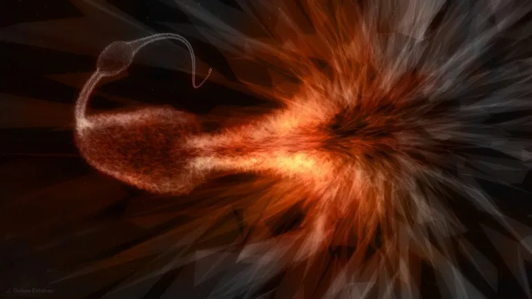
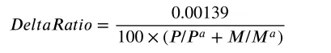
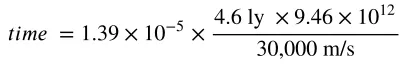
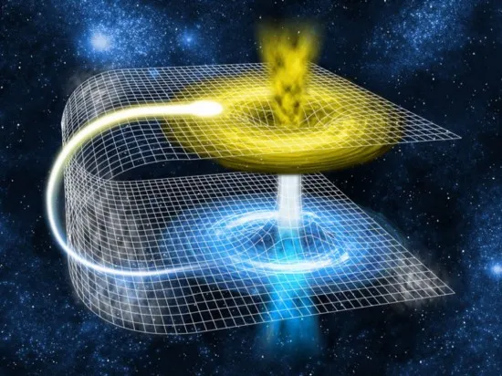

Introduction
Much has been said about Delta Warp and its ability to close the distance between worlds, what is less frequently noted is its ability to connect peoples from across the galaxy.
Put simply Delta Warp is the colloquial name for a technology that can create Einstein-Rosen Bridges or “wormholes” between two points in space. These to points are effectively parallel planes — wherein there is effectively no intervening space. anything that enters into one side of the wormhole, immediately emerges on the other side of the wormhole. A Delta Warp drive can creates numerous sequential holes, along the flight path of an interstellar ship, thus dramatically reducing the amount of space that must be traversed — and making interstellar travel at non-relativistic speeds possible — almost enjoyable.

In this section we will review the calculations you can make to determine the time Interstellar voyages will take. This will add realism to your game, and give your characters time to interact and get to know each other outside of the trials and tribulations of combat, encumbrance and adventures.
Travel Time
To calculate the time required for any interstellar
journey simply follow the set of steps below:
-
Determine the actual distance of the voyage.
This can be done by selecting the X, Y, and Z coordinates of the origin star and the destination star (in lightyears). Plug the numbers into the following equation: - Determine the VelocityMax of your spacecraft. This can’t be found in the description of the spaceship you or can use the guidelines provided detailed below.
- Determine the DeltaRatio for your ship based on the effect of CoreMass from the section below. The standard DeltaRatio is 1.39 x 10⁻⁵.
- Calculate the time spent in Delta-warp is the ratio of space between the warp-holes and their length of the wormholes (DeltaRatio) multiplied by the length of journey in meters (distance) divided by the maximum sustainable speed of the craft (VelocityMax)
- The results of the equation are in seconds. To get days, hours, minutes simply divide by 60 to get minutes, by 60 again to get hours, and by 24 to get days.
- Now to account for Acceleration and deceleration the VelocityMax is divided by the number of G-forces (G’s) the vehicle can protect it’s occupants from+1 multiplied by 4.
Calculation

Core Mass & DeltaRatio
The factors that affect the DeltaRatio are Power Output (P) for the average ship, typically 60MW and the Mass (M) of the average size DWarp core which is 10 Kg.
P — Output of your ships in MW
Pª — Standard power output 120MW
M — Mass of the ship’s drive in kgs
Mª — Standard drive core mass 20 kg
Example
The pilot of an Andromadeian Class vessel wants to travel from Earth to Alpha Centari. After attaining the ship’s maximum velocity (VelocityMax) of 30,000 m/s the pilot engages the D-War drive. The power plant produces a DeltaRatio of 1.39 x 10⁻⁵. The distance from is 4.6 light years. The ship has 9G inertial dampeners.
D-Warp Time

=2016 seconds, which is 5.6 hours
Accel-Decel Time
= 3.3 hours
= 5.6 + 3.3 = 8.9 hours
Total Trip Duration
One way travel time Earth to Alpha Centauri in 8.9 hours. The return trip will take an additional 8.9 hours.
Sample Spacecraft
Typical VelocityMax of everyday Spacecraft
- Older or larger craft (High-liners), slower Vmax = 1,000–5,000 m/sec.
- Newer, smaller, typical vessel, moderate Vmax = 5,000–10,000
- New, small, fast craft, fast Vmax = 10,000–20,000
- Ultra, smallest, designed to speed, Ultra fast Vmax = 20,000–30,000
